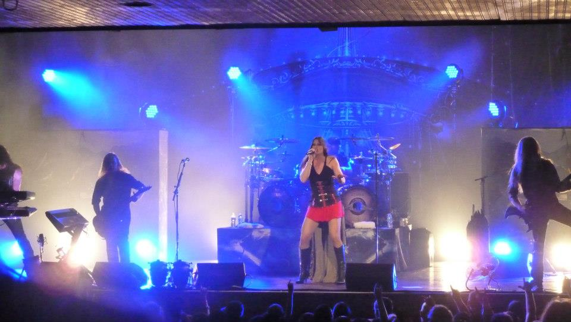

All Time Low
I've been a fan of All Time Low for longer than I realized initially.
Early in their career I had heard their singles on the radio and enjoyed them,
but never really followed them. Then shortly after I got out of college I started
to really enjoy their music and have since seen them twice at the Pageant and will
again in July with one of my best friends. They always put on such an upbeat and
uplifting performance that I'm excited to introduce my friend to them.
| Lyric |
Song |
Album |
Year |
"She works for the weekend, mixtape of her favorite bands
Tearin' up the radio lost in the stereo sound." |
Lost in the Stereo |
Nothing Personal |
2009 |
"I took a walk for the very first time on the dark side of the dance floor,
Lit a match just to heat things up but I got more than I bargained for." |
LA Party Song (The Walk Of Shame) |
Nothing Personal |
2009 |
"I’m just a moment, so don’t let me pass you by
We could be a story in the morning, but a legend tonight" |
Outlines |
Don't Panic |
2012 |
| "Long live the reckless and the brave" |
The Reckless And The Brave |
Don't Panic |
2012 |
"We get older by the hour
Watch the changes from afar
Keep forgetting to remember
Where we've been is who we are" |
Oh Calamity! |
Don't Panic: It's longer now |
2012 |
| "Wishing on a star that's just a satellite" |
Satellite |
Future Hearts |
2015 |
"We got scars on our future hearts
But we never looked back
No, we never looked back" |
Future Hearts |
Future Hearts |
2015 |
Fall Out Boy
I've been a fan of Fall Out Boy since their beginnings in 2003. I was just starting
high school and their early angsty lyrics combined with twists on common phrases drew
me in and I've been a fan ever since. One of my favorite things about this band is that
no two albums they put out sound the same. They have been constantly evolving and experimenting
with their sound, so it's not the same sound rehashed over and over again, but they still occasionally
keep some of the things I grew to love in place.
I have seen Fall Out Boy perform many times over the years with my favorite cousin and
fellow concert buddy. We can both say that we were lucky enough to see one of the very
last performances they made back in 2009 before they went on a 4 year hiatus and one of the sold out
early performances they made at the Pageant upon their return in 2013. It was after the 2013 comeback
show that my cousin and I actually got to briefly meet the lead singer after the show.
| Lyric |
Song |
Album |
Year |
| "Tonight the headphones will deliver you the words that I can't say" |
Homesick at Space Camp |
Take This to Your Grave
| 2003 |
| "I'm two quarters and a heart down" |
Dance, Dance |
From Under the Cork Tree |
2005 |
| "Drop a heart, break a name" |
Sugar We're Goin' Down |
From Under the Cork Tree |
2005 |
| "The best part of believe is the lie" |
Sophomore Slump or Comeback of the Year |
From Under the Cork Tree |
2005 |
| "Which came first, the music or the misery?" |
The Music or the Misery |
From Under the Cork Tree |
2005 |
"Cross my heart and hope to die,
Splinter from the headboard in my eye" |
G.I.N.A.S.F.S. |
Infinity on High |
2007 |
"The prince of any failing empire knows that
Everybody wants
Everybody wants to drive on through the night,
If it's the drive back home" |
G.I.N.A.S.F.S. |
Infinity on High |
2007 |
"I can't explain a thing
I want everything
To change and stay the same" |
(Coffee's For Closers). |
Folie A Deux |
2008 |
"Don't feel bad for the suicidal cats
Gotta kill themselves nine times before they get it right" |
(Coffee's For Closers). |
Folie A Deux |
2008 |
"Cross walks and crossed hearts and hope-to-dies
Silver clouds with grey linings" |
The Phoenix |
Save Rock and Roll |
2013 |
"Let's be alone together (yeah)
We could stay young forever" |
Alone Together |
Save Rock and Roll |
2013 |
"Anything you say can and will be held against you
So only say my name" |
Just One Yesterday |
Save Rock and Roll |
2013 |
"I can move mountains
I can work a miracle, work a miracle
I'll keep you like an oath
'May nothing but death do us part...'" |
Uma Thurman |
American Beauty/American Psycho |
2015 |
"And all my thoughts of you
They could heat or cool the room" |
Fourth of July |
American Beauty/American Psycho |
2015 |
"You were the song stuck in my head
Every song that I’ve ever loved
Played again and again and again" |
Favorite Record |
American Beauty/American Psycho |
2015 |
My Chemical Romance
I became a fan of My Chemical Romance late in the game, but they are still one of my favorite
bands. I hope to one day actually get the chance to see them perform live, but that is unlikely
to be anytime in the near future. They share many similar characteristics to Fall Out Boy in that
no two albums they have sound the same. I also really enjoy how their albums generally have a
cohesive theme that tells a story.
| Lyric |
Song |
Album |
Year |
"Late dawns and early sunsets, just like my favorite scenes
Then holding hands and life was perfect, just like up on the screen" |
Early Sunsets Over Monroeville |
I Brought You My Bullets,
You Brought Me Your Love |
2002 |
| "Give me a reason to believe" |
Thank You for the Venom |
Three Cheers For Sweet Revenge |
2004 |
"Wait until it fades to black
Ride into the sunset
'Would I lie to you?'" |
Hang 'Em High |
Three Cheers For Sweet Revenge |
2004 |
"I am not afraid to keep on living
I am not afraid to walk this world alone" |
Famous Last Words |
The Black Parade |
2006 |
"If my velocity starts to make you sweat,
Then just don't let go" |
Planetary (Go!) |
Danger Days |
2010 |
| "Sparkle like Bowie in the morning sun" |
Vampire Money |
Danger Days |
2010 |
"And if the world stops believing, I'll keep believing
That the world could make a change" |
Kiss the Ring |
Conventional Weapons |
2013 |
"We walked around in your city lights
‘Cause it makes me who I am
We lit the fire
And it’s burning bright" |
Burn Bright |
Conventional Weapons |
2013 |
Nightwish

I have many fond memories involving Nightwish concerts. Seeing Nightwish at Pop's was the first
concert my now husband and I went to as a date. This show was with their second lead female vocalist
and was a good show. However, the most memorable experience I have is that a few days after the show
at Pop's the lead female vocalist quit and they brought in another amazing female vocalist as a "temporary"
member to fill in for the rest of the US tour. When we received news of this, we quickly discovered that
the last show they were doing in the states was at Orlando's House of Blues at Disney World. My cousin
was a Disney intern at the time and we spontaneously decided to take a vacation to Disney World to see
the new singer. The entire trip was put together on about a week's notice and involved lots of scheduling
conflicts since we had to fly down separately, but it was an experience I will never forget.
| Lyric |
Song |
Album |
Year |
"Would you do it with me?
Heal the scars and change the stars" |
Ever Dream |
Century Child |
2002 |
"You told I had the eyes of a wolf
Search them and find the beauty of the beast" |
Beauty of the Beast |
Century Child |
2002 |
"Bring me home or leave me be
My love in the dark heart of the night
I have lost the path before me
The one behind will lead me" |
Ghost Love Score |
Once |
2004 |
"Where is the wonder? Where's the awe?
Where's dear Alice knocking on the door?
Where's the trapdoor that takes me there?
Where's the real is shattered by a Mad March Hare?" |
I Want My Tears Back |
Imaginaerum |
2011 |
"Smile of a stranger
Sweet music, starry skies
Wonder, mystery, wherever my road goes" |
Last Ride of the Day |
Imaginaerum |
2011 |
"I am the voice of Never, Never Land
The innocence, the dreams of every man" |
Storytime |
Imaginaerum |
2011 |